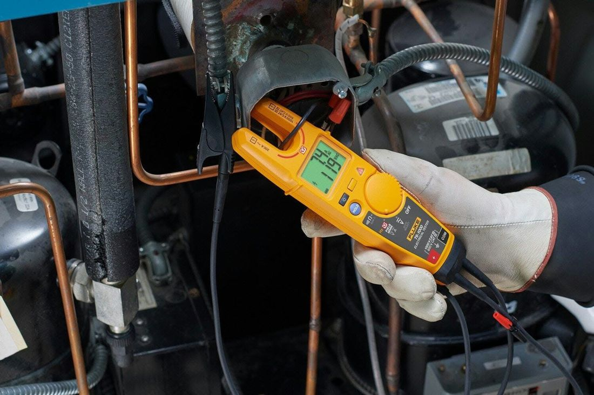
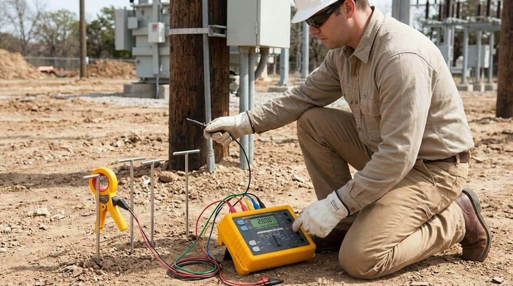
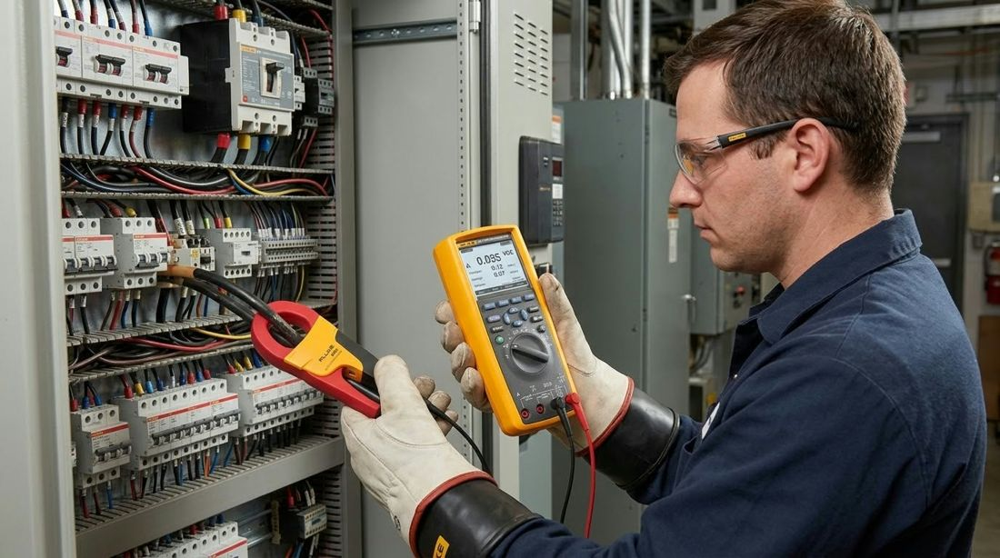
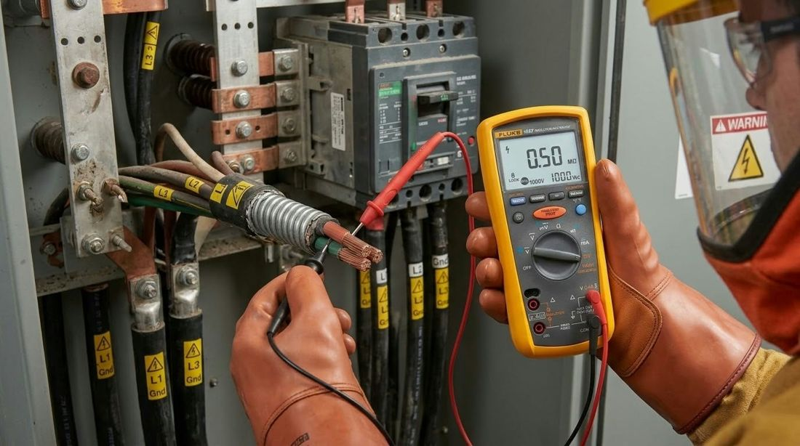
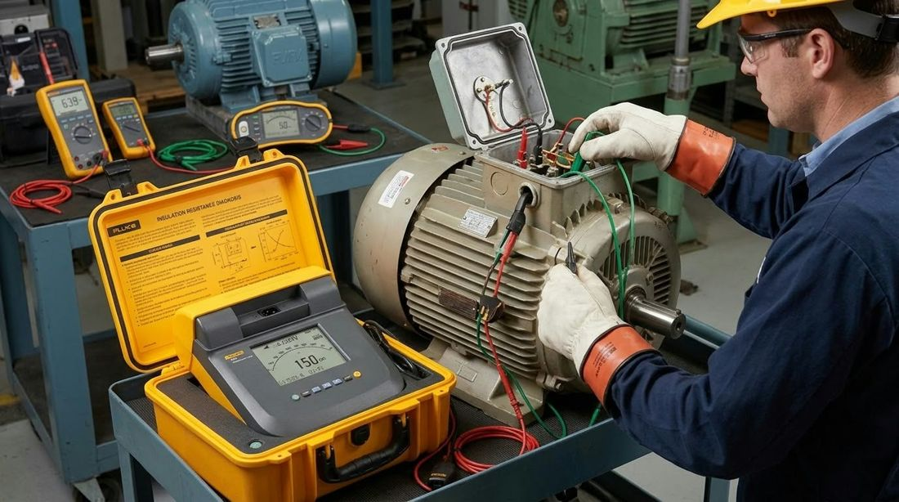
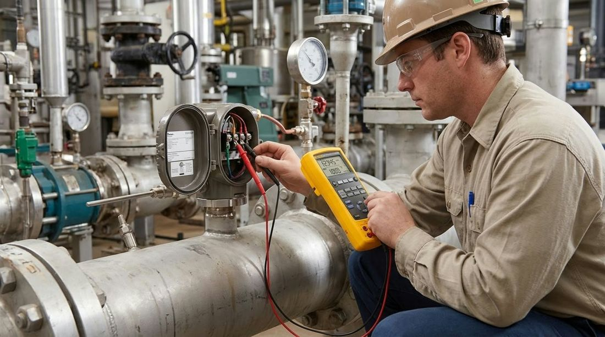
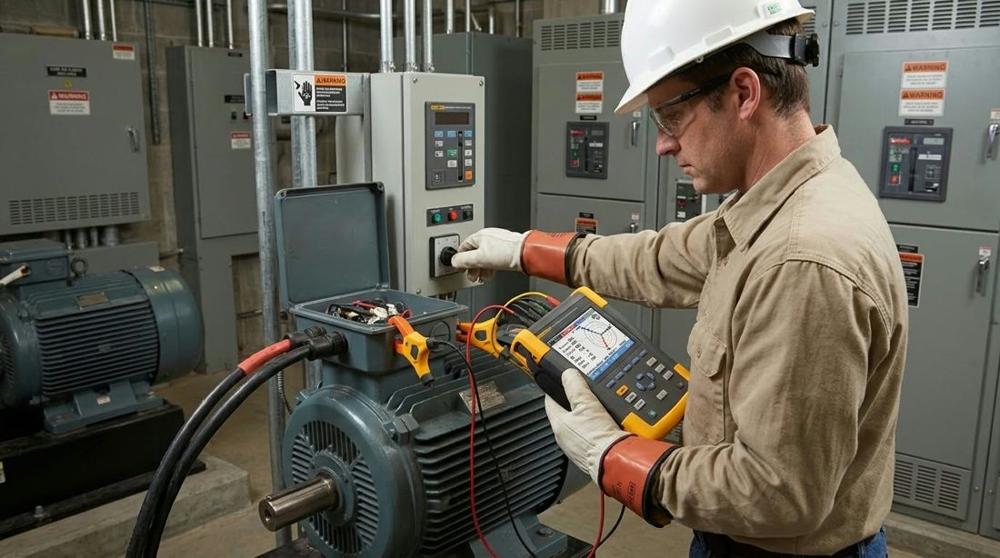
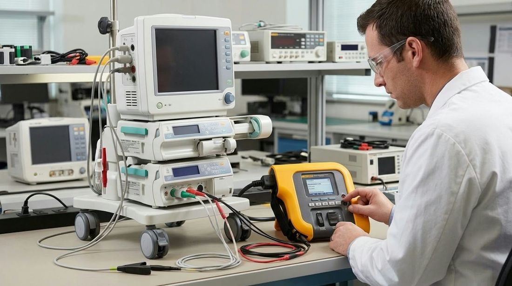
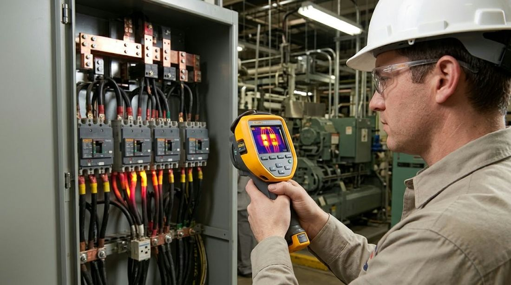
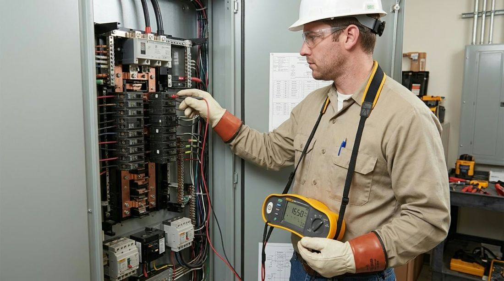

კაბელების ტრასირება და დაზიანების ძებნაCable tracing and fault location
მიწისქვეშა და კედლის შიდა ტრასების პოვნა, ხაზების ფაქტიური გეგმა, ნუმერაცია და მარკირება.Locating underground and in-wall cable routes, as-built circuit plans, numbering and labelling.
აპარატურაInstrumentsFluke 2042

დამიწების სისტემების ტესტირებაEarthing system testing
გრუნტის კუთრი წინაღობის განსაზღვრა, ახალი კონტურების დაპროექტება და მონტაჟი, არსებული კონტურების გაზომვა, მეხამრიდების უკონტაქტო გაზომვები.Soil resistivity measurement, design and installation of new earthing systems, testing of existing ones, stakeless measurement of lightning protection.
აპარატურაInstrumentsFluke 1625

მაღალი სიზუსტის დიაგნოსტიკა, ლოგირება და პროცესების მართვაPrecision diagnostics, logging and process control
ძაბვის, დენისა და წინაღობის ხანგრძლივი მონიტორინგი და მონაცემთა ლოგირება გრაფიკული გამოსახვით. სიხშირული ამძრავების (VFD) ზუსტი დიაგნოსტიკა და რემონტი.Long-term monitoring of voltage, current and resistance with graphical data logging. Precise diagnostics and repair of variable frequency drives (VFD).
აპარატურაInstrumentsFluke 287Fluke 1587FC

მაღალი და დაბალი ძაბვის კაბელების იზოლაციის შემოწმებაHV and LV cable insulation testing
კაბელების იზოლაციის შემოწმება, PI პოლარიზაციის ინდექსისა და DAR დიელექტრიკული შთანთქმის კოეფიციენტის ავტომატური გამოთვლა.Cable insulation testing with automatic calculation of the polarization index (PI) and dielectric absorption ratio (DAR).
აპარატურაInstrumentsFluke 1550CFluke 1587FC

ძრავებისა და მძიმე სამრეწველო დანადგარების დიაგნოსტიკაMotor and heavy industrial equipment diagnostics
ელექტროძრავების, ტრანსფორმატორების, გენერატორებისა და მართვის ფარების ძაბვით ტესტირება და ექსპლუატაციაში შეყვანა.Voltage testing and commissioning of electric motors, transformers, generators and control panels.
აპარატურაInstrumentsFluke 1550C

КИПиА და ავტომატიკის დიაგნოსტიკა და კალიბრაციაInstrumentation and automation diagnostics and calibration
სენსორების, კონტროლერებისა და 4-20mA სიგნალების იმიტაცია და დაკალიბრება სამრეწველო დანადგარებში.Simulation and calibration of sensors, controllers and 4–20 mA signals in industrial equipment.
აპარატურაInstrumentsFluke 724

ელექტროდანადგარების ინსტალაციის ტესტირებაElectrical installation testing
ფაზა-ნულის სრული წინაღობის გაზომვა, მოკლე ჩართვის სავარაუდო დენების (PFC/PSC) გამოთვლა, დიფერენციალური ავტომატების (RCD/FI) ტესტირება ამოქმედების დროსა და დენზე, წრედის უწყვეტობის გაზომვა.Line–neutral loop impedance, prospective fault current (PFC/PSC) calculation, RCD/FI testing of trip time and trip current, circuit continuity measurement.
აპარატურაInstrumentsFluke 1653B

სამედიცინო დანადგარების ელექტროუსაფრთხოების გაზომვაElectrical safety testing of medical equipment
გაზომვები ელექტროუსაფრთხოების სტანდარტების მიხედვით: ANSI/AAMI ES1, NFPA 99, IEC 62353 და IEC 60601-1.Measurements to electrical safety standards ANSI/AAMI ES1, NFPA 99, IEC 62353 and IEC 60601-1.
- ეკგ (EKG) აპარატები და პაციენტის მონიტორებიECG machines and patient monitors
- ულტრაბგერითი დიაგნოსტიკაUltrasound systems
- პულსოქსიმეტრებიPulse oximeters
- ენცეფალოგრაფები (EEG)EEG machines
- პორტატული რენტგენი და ექოსკოპიაPortable X-ray and echo systems
- ფილტვის ხელოვნური ვენტილაციაVentilators
- ინფუზიური და შპრიცის ტუმბოებიInfusion and syringe pumps
- დეფიბრილატორებიDefibrillators
- ჰემოდიალიზის აპარატებიHemodialysis machines
- ელექტროქირურგიული აპარატებიElectrosurgical units
- საოპერაციო მაგიდები და ფუნქციური საწოლებიOperating tables and functional beds
- სამედიცინო და საოპერაციო განათებაMedical and surgical lighting
- პაციენტის გამათბობელი/გამაგრილებელი სისტემებიPatient warming/cooling systems
აპარატურაInstrumentsFluke Biomedical ESA609

ოფიციალური თერმოგრაფიული დასკვნებიOfficial thermography reports
ფარებისა და ძალოვანი კვანძების გადახურების წერტილების გამოვლენა თერმოკამერით. დასკვნა დოკუმენტირებული თერმული ფოტოებით.Detecting hot spots in panels and power connections with a thermal camera. Report documented with thermal images.
აპარატურაInstrumentsFluke Ti10

უკონტაქტო გაზომვებიNon-contact measurements
გაზომვები დანადგარის გაჩერებისა და ქსელის გათიშვის გარეშე. სამუშაო პროცესი არ ჩერდება.Measurements without stopping equipment or switching off the network, so operations keep running.